Ruby 2.0
Under a Microscope

Who is this book for?
- Ruby programmer
- No C programming knowledge is required
Overview
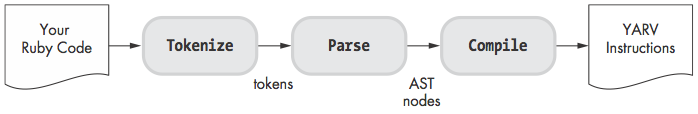JRuby
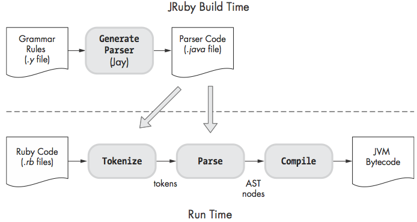Rubinius
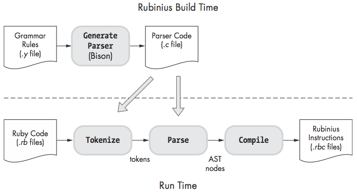Tokenize
10.times do |n|
puts n
end
Before
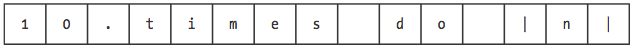After
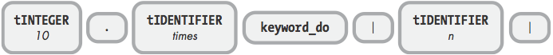parser_yylex in parse.y
Keywords: defs/keywords
Ripper.lex
require 'ripper'
require 'pp'
code = <<STR
10.times do |n|
puts n
end
STR
pp Ripper.lex(code)
[[[1, 0], :on_sp, " "],
[[1, 2], :on_int, "10"],
[[1, 4], :on_period, "."],
[[1, 5], :on_ident, "times"],
[[1, 10], :on_sp, " "],
[[1, 11], :on_kw, "do"],
[[1, 13], :on_sp, " "],
[[1, 14], :on_op, "|"],
[[1, 15], :on_ident, "n"],
[[1, 16], :on_op, "|"],
[[1, 17], :on_ignored_nl, "\n"],
[[2, 0], :on_sp, " "],
[[2, 4], :on_ident, "puts"],
[[2, 8], :on_sp, " "],
[[2, 9], :on_ident, "n"],
[[2, 10], :on_nl, "\n"],
[[3, 0], :on_sp, " "],
[[3, 2], :on_kw, "end"],
[[3, 5], :on_nl, "\n"]]
Phasing
LALR
Bison
Spanish => English Example
Me gusta el Ruby. => I Like Ruby.
Le gusta el Ruby. => She likes Ruby.
Bison/Yacc grammar
SpanishPhrase: VerbAndObject el ruby {
printf("%s Ruby\n", $1);
};
VerbAndObject: SheLikes | ILike {
$$ = $1;
};
SheLikes: le gusta {
$$ = "She likes";
}
ILike: me gusta {
$$ = "I like";
}
Simplified Steps
| Grammar Rule Stack | Tokens | Action |
|---|---|---|
| le gusta el ruby | ||
| le | gusta el ruby | Shift |
| le gusta | el ruby | Shift |
| SheLikes | el ruby | Reduce |
| VerbAndObject | el ruby | Reduce |
| VerbAndObject el | ruby | Shift |
| VerbAndObject el ruby | Shift | |
| SpanishPhrase | Match |
parse.y
ruby -y
10.times do |n|
puts n
end
Starting parse
Entering state 0
Reducing stack by rule 1 (line 782):
-> $$ = nterm @1 ()
Stack now 0
Entering state 2
Reading a token: Next token is token tINTEGER ()
Shifting token tINTEGER ()
Entering state 41
Reducing stack by rule 470 (line 4255):
$1 = token tINTEGER ()
-> $$ = nterm numeric ()
Stack now 0 2
Entering state 104
Reducing stack by rule 428 (line 3830):
$1 = nterm numeric ()
-> $$ = nterm literal ()
Stack now 0 2
Entering state 94
Reducing stack by rule 270 (line 2616):
$1 = nterm literal ()
-> $$ = nterm primary ()
Stack now 0 2
Entering state 80
Reading a token: Next token is token '.' ()
Reducing stack by rule 329 (line 3071):
$1 = nterm primary ()
-> $$ = nterm primary_value ()
Stack now 0 2
Entering state 81
Next token is token '.' ()
Shifting token '.' ()
Entering state 336
Reading a token: Next token is token tIDENTIFIER ()
Shifting token tIDENTIFIER ()
Entering state 533
Reading a token: Next token is token keyword_do ()
Reducing stack by rule 550 (line 4823):
$1 = token tIDENTIFIER ()
-> $$ = nterm operation2 ()
Stack now 0 2 81 336
Entering state 538
Next token is token keyword_do ()
Reducing stack by rule 572 (line 4874):
-> $$ = nterm none ()
Stack now 0 2 81 336 538
Entering state 676
Reducing stack by rule 246 (line 2426):
$1 = nterm none ()
-> $$ = nterm opt_paren_args ()
Stack now 0 2 81 336 538
Entering state 674
Reducing stack by rule 404 (line 3635):
$1 = nterm primary_value ()
$2 = token '.' ()
$3 = nterm operation2 ()
$4 = nterm opt_paren_args ()
-> $$ = nterm method_call ()
Stack now 0 2
Entering state 93
Next token is token keyword_do ()
Shifting token keyword_do ()
Entering state 380
Reducing stack by rule 414 (line 3735):
-> $$ = nterm @28 ()
Stack now 0 2 93 380
Entering state 576
Reading a token: Next token is token '|' ()
Shifting token '|' ()
Entering state 653
Reading a token: Next token is token tIDENTIFIER ()
Shifting token tIDENTIFIER ()
Entering state 761
Reading a token: Next token is token '|' ()
Reducing stack by rule 518 (line 4543):
$1 = token tIDENTIFIER ()
-> $$ = nterm f_norm_arg ()
Stack now 0 2 93 380 576 653
Entering state 636
Reducing stack by rule 519 (line 4550):
$1 = nterm f_norm_arg ()
-> $$ = nterm f_arg_item ()
Stack now 0 2 93 380 576 653
Entering state 637
Reducing stack by rule 521 (line 4578):
$1 = nterm f_arg_item ()
-> $$ = nterm f_arg ()
Stack now 0 2 93 380 576 653
Entering state 765
Next token is token '|' ()
Reducing stack by rule 572 (line 4874):
-> $$ = nterm none ()
Stack now 0 2 93 380 576 653 765
Entering state 748
Reducing stack by rule 537 (line 4723):
$1 = nterm none ()
-> $$ = nterm opt_f_block_arg ()
Stack now 0 2 93 380 576 653 765
Entering state 850
Reducing stack by rule 372 (line 3377):
$1 = nterm f_arg ()
$2 = nterm opt_f_block_arg ()
-> $$ = nterm block_param ()
Stack now 0 2 93 380 576 653
Entering state 763
Next token is token '|' ()
Reducing stack by rule 572 (line 4874):
-> $$ = nterm none ()
Stack now 0 2 93 380 576 653 763
Entering state 770
Reducing stack by rule 385 (line 3479):
$1 = nterm none ()
-> $$ = nterm opt_bv_decl ()
Stack now 0 2 93 380 576 653 763
Entering state 847
Next token is token '|' ()
Shifting token '|' ()
Entering state 905
Reducing stack by rule 384 (line 3468):
$1 = token '|' ()
$2 = nterm block_param ()
$3 = nterm opt_bv_decl ()
$4 = token '|' ()
-> $$ = nterm block_param_def ()
Stack now 0 2 93 380 576
Entering state 655
Reducing stack by rule 381 (line 3444):
$1 = nterm block_param_def ()
-> $$ = nterm opt_block_param ()
Stack now 0 2 93 380 576
Entering state 716
Reading a token: Next token is token tIDENTIFIER ()
Shifting token tIDENTIFIER ()
Entering state 35
Reading a token: Next token is token tIDENTIFIER ()
Reducing stack by rule 547 (line 4818):
$1 = token tIDENTIFIER ()
-> $$ = nterm operation ()
Stack now 0 2 93 380 576 716
Entering state 110
Next token is token tIDENTIFIER ()
Reducing stack by rule 258 (line 2499):
-> $$ = nterm @7 ()
Stack now 0 2 93 380 576 716 110
Entering state 219
Next token is token tIDENTIFIER ()
Shifting token tIDENTIFIER ()
Entering state 35
Reading a token: Next token is token '\n' ()
Reducing stack by rule 474 (line 4275):
$1 = token tIDENTIFIER ()
-> $$ = nterm user_variable ()
Stack now 0 2 93 380 576 716 110 219
Entering state 209
Next token is token '\n' ()
Reducing stack by rule 486 (line 4291):
$1 = nterm user_variable ()
-> $$ = nterm var_ref ()
Stack now 0 2 93 380 576 716 110 219
Entering state 107
Reducing stack by rule 276 (line 2622):
$1 = nterm var_ref ()
-> $$ = nterm primary ()
Stack now 0 2 93 380 576 716 110 219
Entering state 80
Next token is token '\n' ()
Reducing stack by rule 239 (line 2375):
$1 = nterm primary ()
-> $$ = nterm arg ()
Stack now 0 2 93 380 576 716 110 219
Entering state 203
Next token is token '\n' ()
Reducing stack by rule 240 (line 2381):
$1 = nterm arg ()
-> $$ = nterm arg_value ()
Stack now 0 2 93 380 576 716 110 219
Entering state 204
Next token is token '\n' ()
Reducing stack by rule 263 (line 2531):
$1 = nterm arg_value ()
-> $$ = nterm args ()
Stack now 0 2 93 380 576 716 110 219
Entering state 207
Next token is token '\n' ()
Reducing stack by rule 572 (line 4874):
-> $$ = nterm none ()
Stack now 0 2 93 380 576 716 110 219 207
Entering state 398
Reducing stack by rule 262 (line 2525):
$1 = nterm none ()
-> $$ = nterm opt_block_arg ()
Stack now 0 2 93 380 576 716 110 219 207
Entering state 397
Reducing stack by rule 254 (line 2463):
$1 = nterm args ()
$2 = nterm opt_block_arg ()
-> $$ = nterm call_args ()
Stack now 0 2 93 380 576 716 110 219
Entering state 409
Reducing stack by rule 259 (line 2499):
$1 = nterm @7 ()
$2 = nterm call_args ()
-> $$ = nterm command_args ()
Stack now 0 2 93 380 576 716 110
Entering state 387
Next token is token '\n' ()
Reducing stack by rule 58 (line 1344):
$1 = nterm operation ()
$2 = nterm command_args ()
-> $$ = nterm command ()
Stack now 0 2 93 380 576 716
Entering state 72
Next token is token '\n' ()
Reducing stack by rule 51 (line 1297):
$1 = nterm command ()
-> $$ = nterm command_call ()
Stack now 0 2 93 380 576 716
Entering state 70
Reducing stack by rule 44 (line 1249):
$1 = nterm command_call ()
-> $$ = nterm expr ()
Stack now 0 2 93 380 576 716
Entering state 69
Next token is token '\n' ()
Reducing stack by rule 41 (line 1225):
$1 = nterm expr ()
-> $$ = nterm stmt ()
Stack now 0 2 93 380 576 716
Entering state 245
Next token is token '\n' ()
Reducing stack by rule 14 (line 933):
$1 = nterm stmt ()
-> $$ = nterm stmts ()
Stack now 0 2 93 380 576 716
Entering state 244
Next token is token '\n' ()
Shifting token '\n' ()
Entering state 289
Reducing stack by rule 569 (line 4866):
$1 = token '\n' ()
-> $$ = nterm term ()
Stack now 0 2 93 380 576 716 244
Entering state 291
Reducing stack by rule 570 (line 4869):
$1 = nterm term ()
-> $$ = nterm terms ()
Stack now 0 2 93 380 576 716 244
Entering state 433
Reading a token: Next token is token keyword_end ()
Reducing stack by rule 560 (line 4847):
$1 = nterm terms ()
-> $$ = nterm opt_terms ()
Stack now 0 2 93 380 576 716 244
Entering state 432
Reducing stack by rule 12 (line 913):
$1 = nterm stmts ()
$2 = nterm opt_terms ()
-> $$ = nterm compstmt ()
Stack now 0 2 93 380 576 716
Entering state 817
Next token is token keyword_end ()
Shifting token keyword_end ()
Entering state 881
Reducing stack by rule 415 (line 3734):
$1 = token keyword_do ()
$2 = nterm @28 ()
$3 = nterm opt_block_param ()
$4 = nterm compstmt ()
$5 = token keyword_end ()
-> $$ = nterm brace_block ()
Stack now 0 2 93
Entering state 382
Reducing stack by rule 298 (line 2781):
$1 = nterm method_call ()
$2 = nterm brace_block ()
-> $$ = nterm primary ()
Stack now 0 2
Entering state 80
Reading a token: Next token is token '\n' ()
Reducing stack by rule 239 (line 2375):
$1 = nterm primary ()
-> $$ = nterm arg ()
Stack now 0 2
Entering state 79
Next token is token '\n' ()
Reducing stack by rule 49 (line 1282):
$1 = nterm arg ()
-> $$ = nterm expr ()
Stack now 0 2
Entering state 69
Next token is token '\n' ()
Reducing stack by rule 41 (line 1225):
$1 = nterm expr ()
-> $$ = nterm stmt ()
Stack now 0 2
Entering state 67
Next token is token '\n' ()
Reducing stack by rule 8 (line 855):
$1 = nterm stmt ()
-> $$ = nterm top_stmt ()
Stack now 0 2
Entering state 66
Reducing stack by rule 5 (line 833):
$1 = nterm top_stmt ()
-> $$ = nterm top_stmts ()
Stack now 0 2
Entering state 65
Next token is token '\n' ()
Shifting token '\n' ()
Entering state 289
Reducing stack by rule 569 (line 4866):
$1 = token '\n' ()
-> $$ = nterm term ()
Stack now 0 2 65
Entering state 291
Reducing stack by rule 570 (line 4869):
$1 = nterm term ()
-> $$ = nterm terms ()
Stack now 0 2 65
Entering state 292
Reading a token: Now at end of input.
Reducing stack by rule 560 (line 4847):
$1 = nterm terms ()
-> $$ = nterm opt_terms ()
Stack now 0 2 65
Entering state 290
Reducing stack by rule 3 (line 813):
$1 = nterm top_stmts ()
$2 = nterm opt_terms ()
-> $$ = nterm top_compstmt ()
Stack now 0 2
Entering state 64
Reducing stack by rule 2 (line 782):
$1 = nterm @1 ()
$2 = nterm top_compstmt ()
-> $$ = nterm program ()
Stack now 0
Entering state 1
Now at end of input.
Stack now 0 1
Cleanup: popping nterm program ()
Ripper.sexp
require 'ripper'
require 'pp'
code = <<STR
10.times do |n|
puts n
end
STR
puts code
pp Ripper.sexp(code)
[:program,
[[:method_add_block,
[:call, [:@int, "10", [1, 3]], :".", [:@ident, "times", [1, 6]]],
[:do_block,
[:block_var,
[:params, [[:@ident, "n", [1, 16]]], nil, nil, nil, nil],
nil],
[[:command,
[:@ident, "puts", [2, 0]],
[:args_add_block, [[:var_ref, [:@ident, "n", [2, 5]]]], false]]]]]]]
ruby --dump parsetree
@ NODE_SCOPE (line: 3)
+- nd_tbl: (empty)
+- nd_args:
| (null node)
+- nd_body:
@ NODE_ITER (line: 1)
+- nd_iter:
| @ NODE_CALL (line: 1)
| +- nd_mid: :times
| +- nd_recv:
| | @ NODE_LIT (line: 1)
| | +- nd_lit: 10
| +- nd_args:
| (null node)
+- nd_body:
@ NODE_SCOPE (line: 3)
+- nd_tbl: :n
+- nd_args:
| @ NODE_ARGS (line: 1)
| +- nd_frml: 1
| +- nd_next:
| | @ NODE_ARGS_AUX (line: 1)
| | +- nd_rest: (null)
| | +- nd_body: (null)
| | +- nd_next:
| | (null node)
| +- nd_opt:
| (null node)
+- nd_body:
@ NODE_FCALL (line: 2)
+- nd_mid: :puts
+- nd_args:
@ NODE_ARRAY (line: 2)
+- nd_alen: 1
+- nd_head:
| @ NODE_DVAR (line: 2)
| +- nd_vid: :n
+- nd_next:
(null node)
Compilation
Ruby 1.8
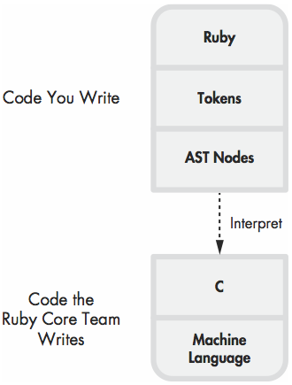Ruby 1.9 & 2.0
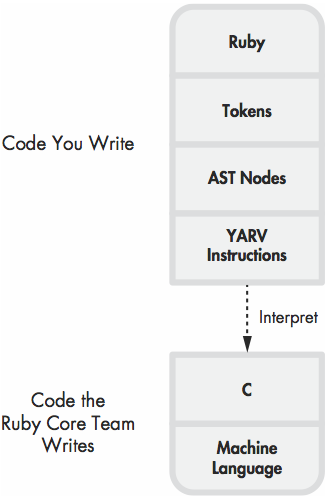Benchmark
i= 0
while i < ARGV[0].to_i
i += 1
end
logarithmic scale
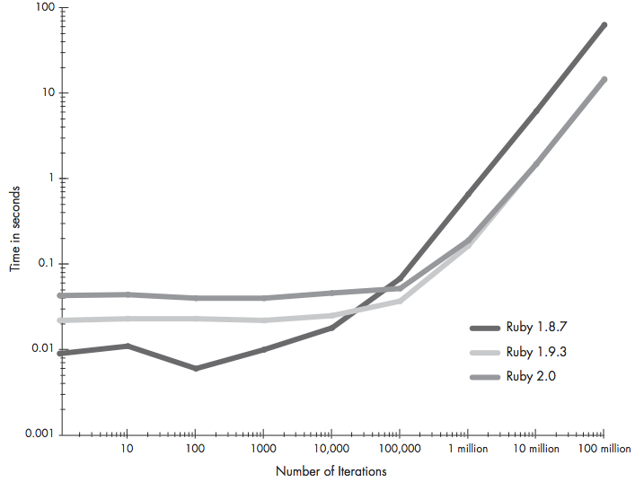linear scale
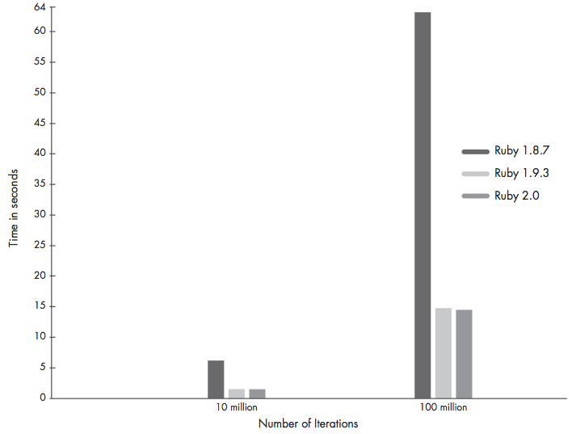iseq_compile_each in compile.c
Example
code = <<-RUBY
puts 1 + 2
RUBY
puts RubyVM::InstructionSequence.compile(code).disasm
Compiled
== disasm: <RubyVM::InstructionSequence:<compiled>@<compiled>>==========
0000 trace 1 ( 1)
0002 putself
0003 putobject_OP_INT2FIX_O_1_C_
0004 putobject 2
0006 opt_plus <callinfo!mid:+, argc:1, ARGS_SKIP>
0008 opt_send_simple <callinfo!mid:puts, argc:1, FCALL|ARGS_SKIP>
0010 leave
Example 2
code = <<-RUBY
10.times do |n|
puts n
end
RUBY
puts RubyVM::InstructionSequence.compile(code).disasm
Compiled
== disasm: <RubyVM::InstructionSequence:<compiled>@<compiled>>==========
== catch table
| catch type: break st: 0002 ed: 0006 sp: 0000 cont: 0006
|------------------------------------------------------------------------
0000 trace 1 ( 1)
0002 putobject 10
0004 send <callinfo!mid:times, argc:0, block:block in <compiled>>
0006 leave
== disasm: <RubyVM::InstructionSequence:block in <compiled>@<compiled>>=
== catch table
| catch type: redo st: 0000 ed: 0009 sp: 0000 cont: 0000
| catch type: next st: 0000 ed: 0009 sp: 0000 cont: 0009
|------------------------------------------------------------------------
local table (size: 2, argc: 1 [opts: 0, rest: -1, post: 0, block: -1] s3)
[ 2] n<Arg>
0000 trace 256 ( 1)
0002 trace 1 ( 2)
0004 putself
0005 getlocal_OP__WC__0 2
0007 opt_send_simple <callinfo!mid:puts, argc:1, FCALL|ARGS_SKIP>
0009 trace 512 ( 3)
0011 leave ( 2)
Execution
As double stack machine
rb_control_frame_t
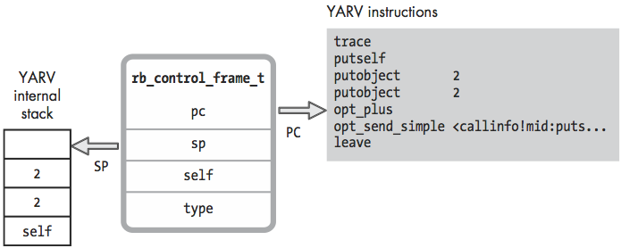caller
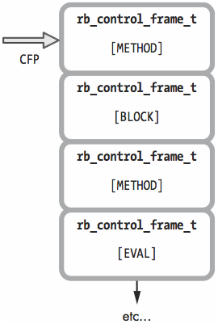Example
10.times do
puts "The quick brown fox jumps over the lazy dog."
end
Local Variable Access
Environment Pointer
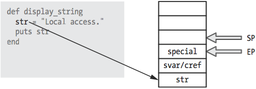Dynamic Variable Access
code = <<-RUBY
def display_string
str = "Dynamic access."
10.times do
puts str
end
end
RUBY
puts RubyVM::InstructionSequence.compile(code).disasm
== disasm: <RubyVM::InstructionSequence:f@<compiled>>===================
== catch table
| catch type: break st: 0010 ed: 0014 sp: 0000 cont: 0014
|------------------------------------------------------------------------
local table (size: 2, argc: 0 [opts: 0, rest: -1, post: 0, block: -1] s1)
[ 2] str
0000 trace 8 ( 1)
0002 trace 1 ( 2)
0004 putstring "Dynamic access."
0006 setlocal_OP__WC__0 2
0008 trace 1 ( 3)
0010 putobject 10
0012 send <callinfo!mid:times, argc:0, block:block in f>
0014 trace 16 ( 6)
0016 leave ( 3)
== disasm: <RubyVM::InstructionSequence:block in f@<compiled>>==========
== catch table
| catch type: redo st: 0000 ed: 0009 sp: 0000 cont: 0000
| catch type: next st: 0000 ed: 0009 sp: 0000 cont: 0009
|------------------------------------------------------------------------
0000 trace 256 ( 3)
0002 trace 1 ( 4)
0004 putself
0005 getlocal_OP__WC__1 2
0007 opt_send_simple <callinfo!mid:puts, argc:1, FCALL|ARGS_SKIP>
0009 trace 512 ( 5)
0011 leave ( 4)
Special Variable Access
Guess?
str = "The quick brown fox jumped over the lazy dog.\n"
/fox/.match(str)
def search(str)
/dog/.match(str)
puts "Value of $& inside method: \#{$&}"
end
search(str)
puts "Value of $& in the top level scope: \#{$&}"

Guess Again?
str = "The quick brown fox jumped over the lazy dog.\n"
/fox/.match(str)
2.times do
/dog/.match(str)
puts "Value of $& inside block: \#{$&}"
end
puts "Value of $& in the top level scope: \#{$&}"
YARV Instruments Definitions
Control Structures
Example
code = <<-RUBY
i = 0
while i < 20
if i < 10
puts 'small'
else
for j in 0..3
puts "large \#{j}"
end
end
i += 1
end
puts 'done'
RUBY
puts RubyVM::InstructionSequence.compile(code).disasm
== disasm: <RubyVM::InstructionSequence:<compiled>@<compiled>>==========
== catch table
| catch type: break st: 0035 ed: 0039 sp: 0000 cont: 0039
| catch type: break st: 0013 ed: 0058 sp: 0000 cont: 0058
| catch type: next st: 0013 ed: 0058 sp: 0000 cont: 0010
| catch type: redo st: 0013 ed: 0058 sp: 0000 cont: 0013
|------------------------------------------------------------------------
local table (size: 3, argc: 0 [opts: 0, rest: -1, post: 0, block: -1] s1)
[ 3] i [ 2] j
0000 trace 1 ( 1)
0002 putobject_OP_INT2FIX_O_0_C_
0003 setlocal_OP__WC__0 3
0005 trace 1 ( 2)
0007 jump 49
0009 putnil
0010 pop
0011 jump 49
0013 trace 1 ( 3)
0015 getlocal_OP__WC__0 3
0017 putobject 10
0019 opt_lt <callinfo!mid:<, argc:1, ARGS_SKIP>
0021 branchunless 33
0023 trace 1 ( 4)
0025 putself
0026 putstring "small"
0028 opt_send_simple <callinfo!mid:puts, argc:1, FCALL|ARGS_SKIP>
0030 pop
0031 jump 40 ( 3)
0033 trace 1 ( 6)
0035 putobject 0..3
0037 send <callinfo!mid:each, argc:0, block:block in <compiled>>
0039 pop
0040 trace 1 ( 10)
0042 getlocal_OP__WC__0 3
0044 putobject_OP_INT2FIX_O_1_C_
0045 opt_plus <callinfo!mid:+, argc:1, ARGS_SKIP>
0047 setlocal_OP__WC__0 3
0049 getlocal_OP__WC__0 3 ( 2)
0051 putobject 20
0053 opt_lt <callinfo!mid:<, argc:1, ARGS_SKIP>
0055 branchif 13
0057 putnil
0058 pop
0059 trace 1 ( 12)
0061 putself
0062 putstring "done"
0064 opt_send_simple <callinfo!mid:puts, argc:1, FCALL|ARGS_SKIP>
0066 leave
== disasm: <RubyVM::InstructionSequence:block in <compiled>@<compiled>>=
== catch table
| catch type: redo st: 0004 ed: 0018 sp: 0000 cont: 0004
| catch type: next st: 0004 ed: 0018 sp: 0000 cont: 0018
|------------------------------------------------------------------------
local table (size: 2, argc: 1 [opts: 0, rest: -1, post: 0, block: -1] s3)
[ 2] ?<Arg>
0000 getlocal_OP__WC__0 2 ( 8)
0002 setlocal_OP__WC__1 2 ( 6)
0004 trace 256
0006 trace 1 ( 7)
0008 putself
0009 putobject "large "
0011 getlocal_OP__WC__1 2
0013 tostring
0014 concatstrings 2
0016 opt_send_simple <callinfo!mid:puts, argc:1, FCALL|ARGS_SKIP>
0018 trace 512 ( 8)
0020 leave ( 7)
Catch table

Objects & Class
RObject
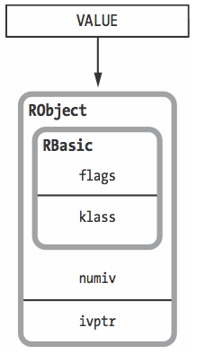Example
class Mathematician
attr_accessor :first_name
attr_accessor :last_name
end
euler = Mathematician.new
euler.first_name = 'Leonhard'
euler.last_name = 'Euler'
euclid = Mathematician.new
euclid.first_name = 'Euclid'